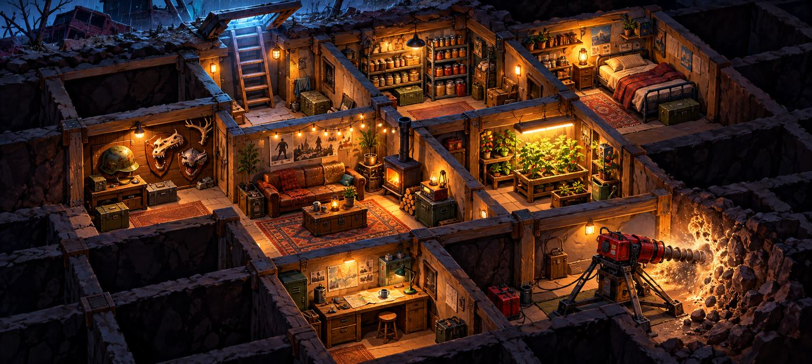
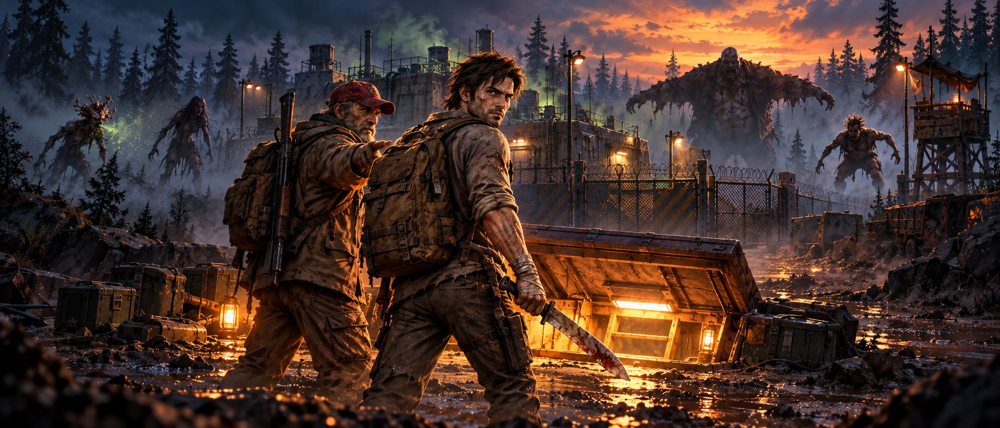
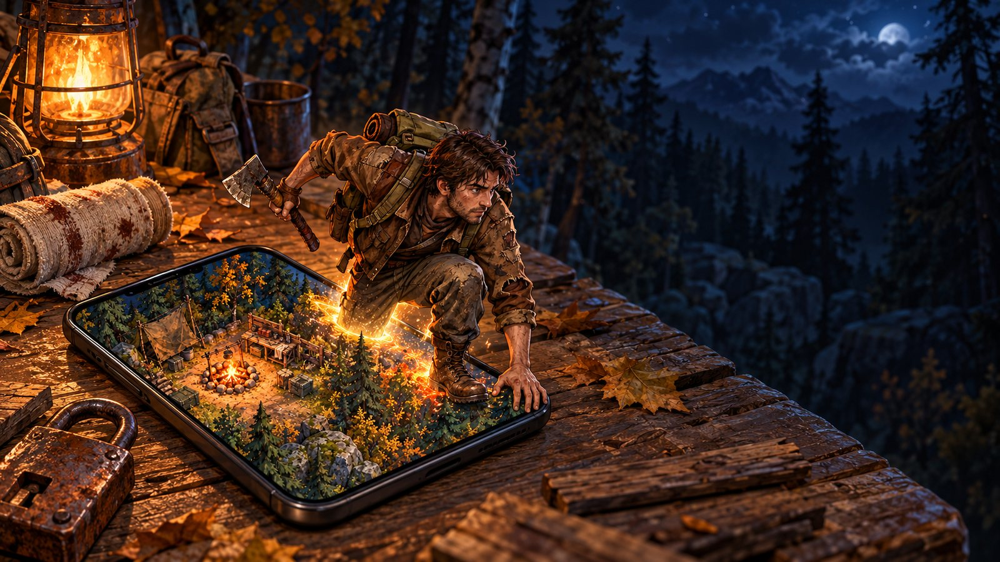
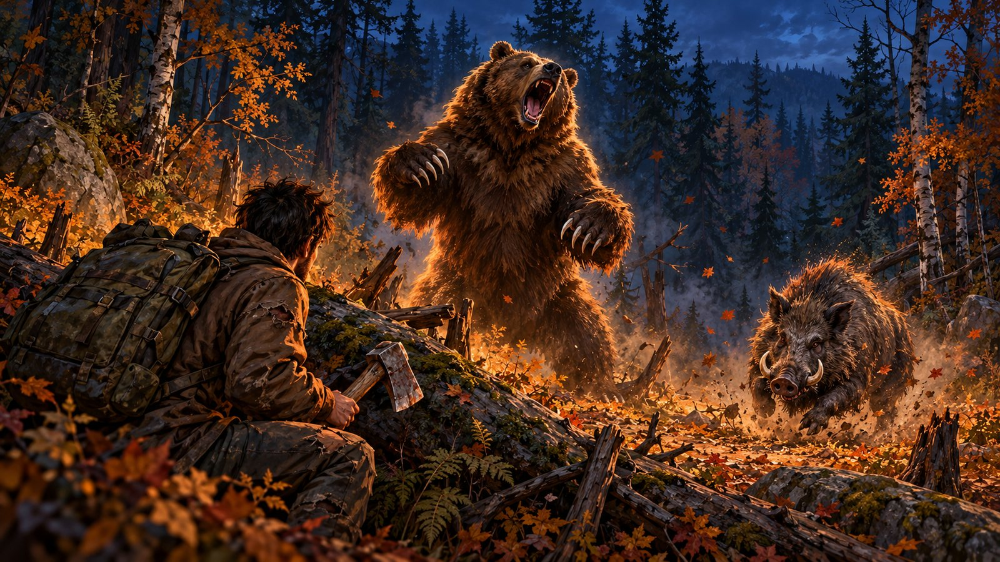
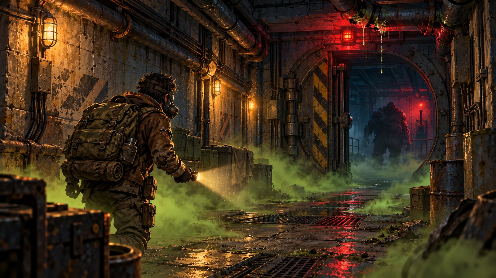
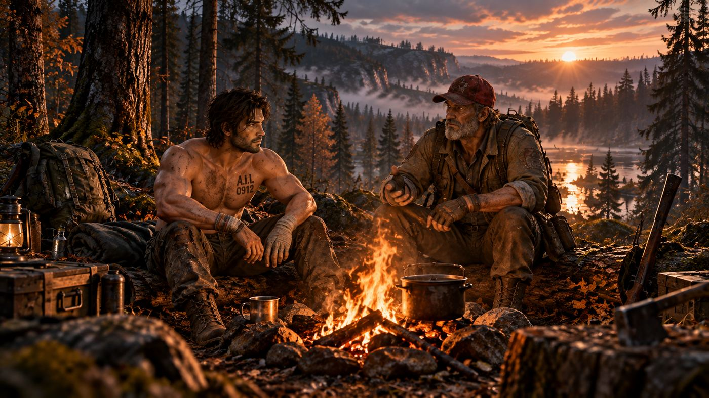
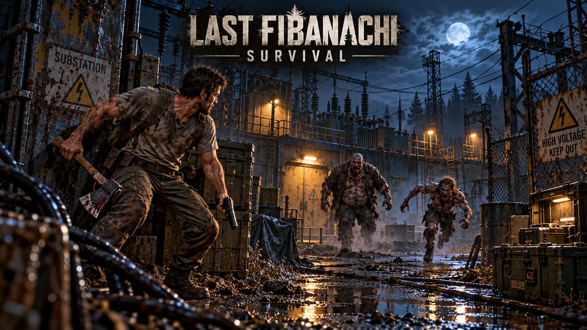
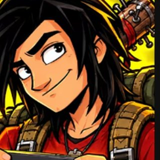

Вышла 0.2.0: подвал под домом
Люк, бур и база под землёй. Плюс честная добыча, крафт по времени и выбор 30/60 FPS.

Добывай, строй дом, отбивай ночные рейды и копай свою базу под землёй. Инди-выживание, которое растёт каждую неделю вместе с игроками.
Android и Windows. Версия 0.2.1, обновления каждую неделю.
SHA-256 98F8B793AEE8FB4241F29B9C88E62EB9A1A0C5CDA9272133E53261DF5909E7C0SHA-256 1ECCB813B759C7F057517AEC329C5F9C9A5877C90F18BE66AA7CC03EE5E84AA4Файлы лежат на GitHub. Проверить, что файл не подменён, можно по SHA-256: команда Get-FileHash в PowerShell.

Apple одобрила первую версию для iOS. Ставится бесплатно через TestFlight, нужен iOS 15 или новее. Внутри всё то же, что в 0.2.1, включая кооп по Wi-Fi.
Чертёж бура больше не теряется, Подстанция и обучение починены, плюс сортировка сундуков и новое вступление. Почти всё пришло из чата.
Почему выживание вдвоём сделать так сложно и как в LFS не будет ни воровства, ни обиженных донатеров.

Лес больше не безопасен: кабан бросается с разбега, медведь встаёт на дыбы с рёвом. А ночью видно только их глаза. Скоро в игре.

Под Подстанцией есть люк. На нём цепь. Кто-то очень не хотел, чтобы его открывали.
Этот кто-то Чарли. Он сам запечатал бункер вместе со всеми, кто был внутри. А потом пошёл газ. Внутри коридор, где с потолка капает кислота, зелёный туман, где без противогаза не выжить, тёмный зал, где гаснет свет, Плеваки и в самом конце Обвал у рубильника. Дёрнул рубильник, и у тебя 40 секунд на побег.
Зачем туда лезть? За жетонами. За них терминал наверху выдаёт ящик с зарядами для бура, то есть новые клетки подвала. Бункер открывается раз в сутки. Карта и механики готовы и тестируются, дальше графика и тесты на телефонах.

Вы писали, что игра проходится слишком быстро. Согласен.
Делаем станции, которые работают в реальном времени, даже когда игра закрыта: готовка, плавка, бурение. Поставил плавиться, ушёл на вылазку, вернулся. Цифры ещё подбираем, расскажем, когда будет готово.

Люк, бур и база под землёй. Плюс честная добыча, крафт по времени и выбор 30/60 FPS.
У LFS первый большой партнёр: 800 тыс. подписчиков. Скоро откроем партнёрскую программу.
Новости, версии, партнёры и скачивание в одном месте. На русском и английском.

Ставишь люк, крафтишь бур и прорубаешь базу клетку за клеткой.
Дерево качается, трещит и отдаёт ресурс только когда падает.
Верстак работает от 5 до 10 секунд, в очереди до трёх предметов.
На бегу нельзя бить и стрелять. Патроны приходится искать.
Бегаешь, и голод растёт быстрее. Отдыхаешь, и медленнее.
Карта мира, Густой лес и Подстанция с цепью на воротах.
Новичка встречают у костра и учат выживать с первой ветки.
30 или 60 FPS, автоматическое качество, крупные кнопки меню.

Меня не было на YouTube четыре года. Я вернулся со своей игрой и делаю её в одиночку. В роликах показываю всё как есть: что сломали игроки, что я починил и что будет дальше.
Ютуберы и стримеры получают новые версии раньше всех и показывают их своей аудитории.
Место свободно. Оставь заявку ниже.
Ставится поверх 0.1 и 0.2.0, сохранения остаются.
Лучшие находки игроков попадают в игру.
На Android установи новый APK поверх старой игры. Удалять ничего не нужно, сохранение останется.
Это была отдельная тестовая сборка. Удали её и поставь APK с этой страницы. Прогресс из неё не переносится.
Открой меню паузы и выбери 30 FPS и качество LOW. На слабых телефонах 60 FPS может тормозить.
Чертёж дают за Подстанцию. Буровую установку крафтят на продвинутом верстаке, нужен 8-й уровень.
iOS уже есть: ставится через TestFlight в разделе «Скачать». Кооп на двоих работает по локальной сети, через интернет в работе.
Сейчас кооператив работает по локальной сети: оба устройства должны быть в одной Wi-Fi сети. Нажми «Кооп» на главном экране, один игрок создаёт игру, второй подключается по коду. Игра через интернет и общий лагерь в работе. Как будет устроен кооператив →
Пока нет: сохранение хранится на самом устройстве. Перенос между устройствами в планах, вместе с облачными сохранениями.
Скачивай игру здесь, на сайте, в разделе «Скачать». Это официальный источник, файлы проверены по SHA-256.